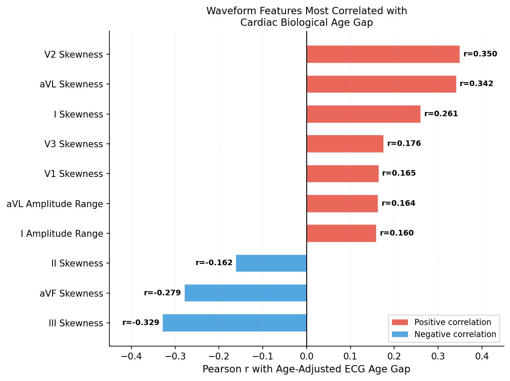
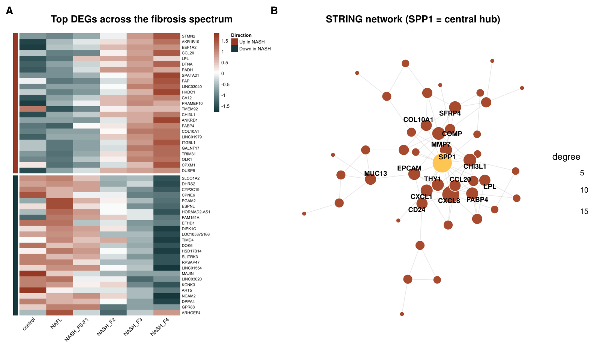
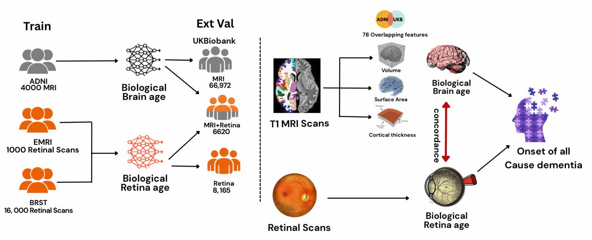
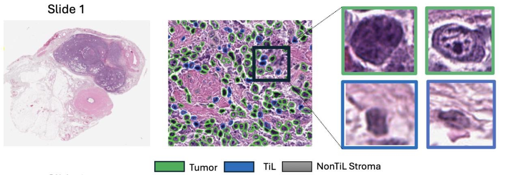
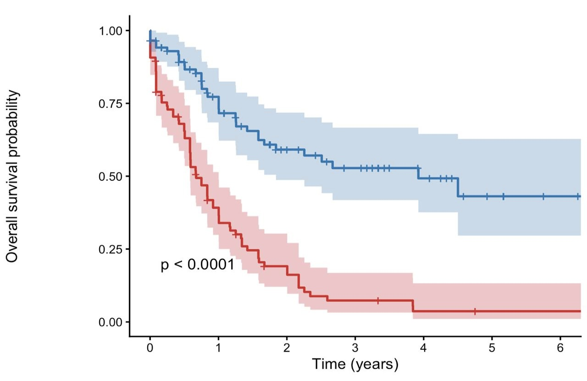
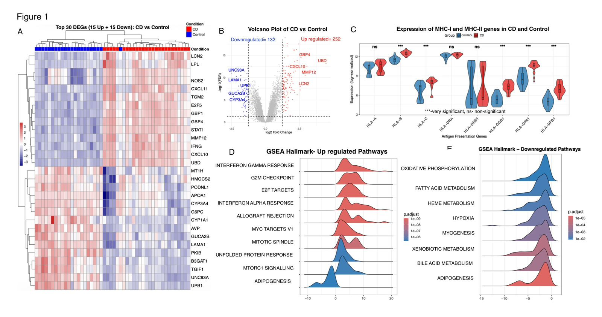
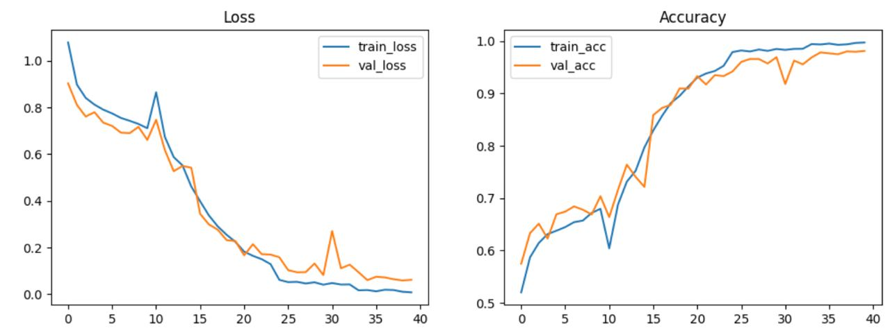
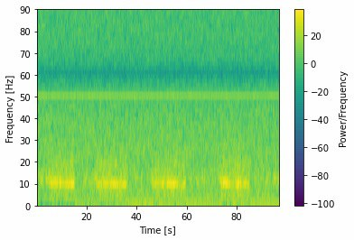
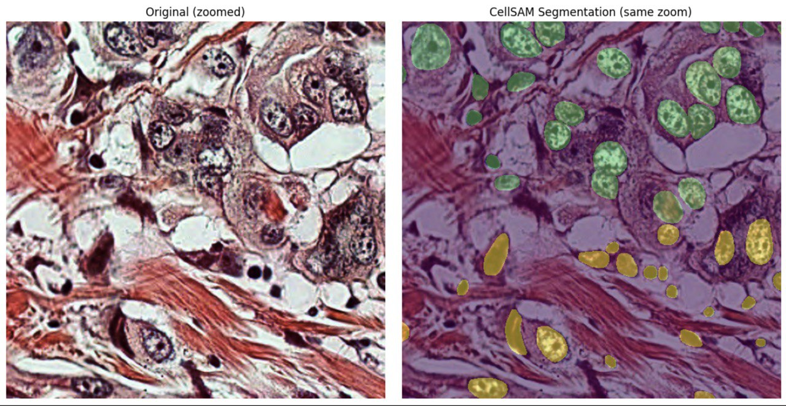

Amith Paruchuri
Final year MBBS student at AIIMS New Delhi, working at the intersection of clinical medicine, bioinformatics, and AI. Research internships at Harvard Medical School, IISc Bangalore, and CCMB Hyderabad.
Technical background
Genomics · microarray · single-cell & bulk transcriptomics · proteomics · whole-slide histopathology · MRI · ultrasound · EEG | Python · R · PyTorch · Seurat · SCENIC · CellChat · NicheNet · clusterProfiler · limma · glmnet · TIAToolbox · CellViT · OpenCV · MNE
A 1D residual neural network trained on normal ECGs from PTB-XL (n=21,837) predicts chronological age from raw 12-lead waveforms. Age-adjusted gap analysis showed significantly elevated gaps in conduction disorders, ST/T-wave changes, and myocardial infarction. Females showed consistently larger gaps than males. V2 and aVL lead skewness emerged as the dominant waveform correlates, outperforming amplitude-based features.

RNA-seq from 216 liver biopsies (control, NAFL, NASH stratified F0–F4) identified a 563-gene fibroinflammatory progression signature via voom-limma. GSEA showed enrichment of EMT, TNF/NF-κB, and IL-6/STAT3 pathways with suppression of oxidative phosphorylation. STRING network analysis identified SPP1 (osteopontin) as the dominant hub gene — betweenness 476, over double the next node — rising progressively with fibrosis stage (FDR 2.9e-9).

Independent aging clocks were derived from retinal fundus imaging using pretrained foundation models and from structural brain imaging features. Residualized modeling, interaction analysis, and spline-based nonlinear regression tested whether age-gap deviations converge or diverge across the lifespan, demonstrating how multimodal imaging can capture shared systemic aging biology.

Single-nucleus RNA sequencing was used to identify shared and disease-specific astrocyte states across Alzheimer's disease and primary tauopathies. Clustering and differential proportion analysis revealed distinct astrocyte phenotypes enriched in inflammatory, stress signaling, and homeostatic pathways. Spatial transcriptomic mapping localized reactive phenotypes to disease-relevant brain regions.

Tumor and cellular compartments were segmented in DLBCL whole-slide images using deep learning, and a transition zone band was created around tumor margins. Spatial infiltration patterns were modeled as continuous curves, with slope-based features extracted to capture tumor–immune topology not visible through bulk immune density measures.

A transcriptome-derived genomic risk score was developed to capture immune regulatory and leukocyte differentiation programs beyond traditional cytogenetic risk stratification. Survival modeling and LASSO regression derived the gene signature, with differential expression and pathway enrichment characterizing the immune signaling landscape of adverse prognosis.

Mucosal transcriptomic landscapes in coeliac disease were investigated via differential gene expression and immune deconvolution. An immune activation index was derived to quantify mucosal immune state beyond histology. Pathway enrichment highlighted inflammatory signaling, antigen presentation, and lymphoid infiltration correlating with disease activity.

Transfer learning using MobileNet was applied to structural MRI to classify stages of dementia. Grad-CAM visualization confirmed spatial consistency of model attention with disease-relevant anatomical regions.

EEG signals were converted into spectrogram representations and classified using deep learning to develop an objective screening tool for schizophrenia, suited for low-resource clinical settings.

RGB crops around cell coordinates were generated and fused with SAM-derived segmentation masks to train a ResNet classifier for mitotic figure detection — a critical prognostic marker across multiple tumor types.

Vision Transformer features were extracted from multi-slice prostate MRI scans and aggregated at case level to predict cancer grade using deep learning.